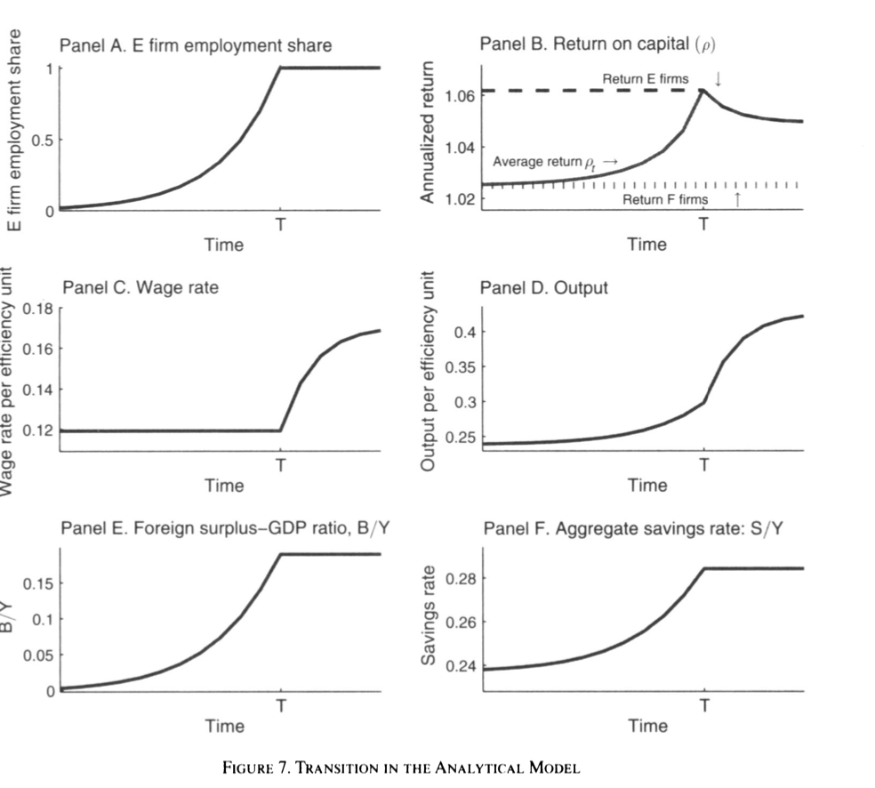
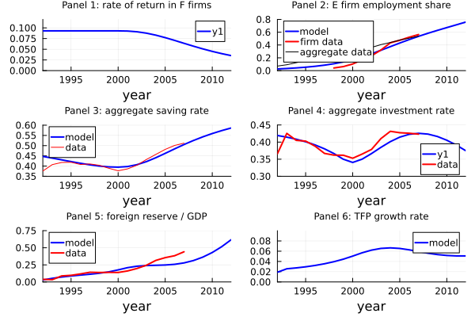
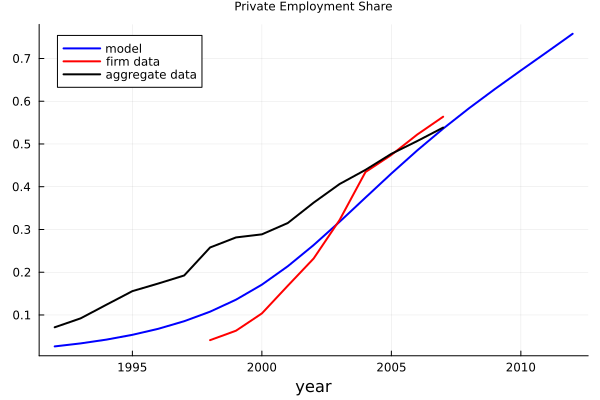
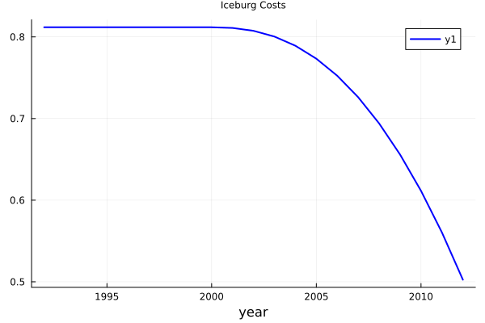
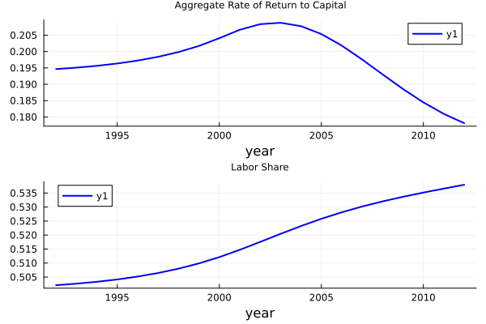
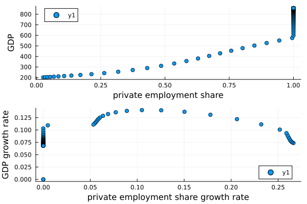

Code and Results
We will introduce our replication code and results here.
Installation
We need these packages：
import Pkg
Pkg.add("Plots")
Pkg.add("MAT")
Pkg.add("JLD2")
Pkg.add("Statistics")
Pkg.add("CSV")
Pkg.add("DataFrames")Parameters We set
Here we introduce all parameters we set and their main explanation, where we have our codes.
Parameter without calibration
bet=0.998; # discount factor of workers
bet_E=bet; # discount factor of entrepreneurs
r=0.0175; # world interest rate
sig=0.5; # the inverse of intertemporal substitution
alp=0.5; # capital output elasticity
del=0.10; # depreciation rate
g_n=0.03; # exogenous population growth
r_soe_ini=0.093; # initial lending rate for SOEs
ice=1-r/(r_soe_ini); # iceberg costTFP growth
g_t=0.038; # exogenous TFP growth
bet=bet*(1+g_t)^(1-sig); # TFP growth adjusted discount factor
bet_E=bet_E*(1+g_t)^(1-sig); # TFP growth adjusted discount factorcalibration targets
KY_F_E=2.65; # the ratio of K/Y in the F sector to K/Y in the E sector
rho_r=(r_soe_ini+0.09)/(r/(1-ice)); # the ratio of the rate of return in the E sector to that in the F sector
psi1=(rho_r*r/(1-ice)+del)/(r/(1-ice)+del)/KY_F_E # share of managerial compensation
ksi=(KY_F_E)*(alp/(1-alp))/(1-psi) # productivity ratio of E over Fbank loan in the E sector
loan_asset=1; # loan asset ratio
eta=loan_asset*(1+r/(1-ice))/(1+rho_r*r/(1-ice)+(rho_r*r/(1-ice)-r/(1-ice))*loan_asset) # measure of financial frictionsinitial asset
initial_ratio=0.80;
initial_ratio_E=0.33;demographic structure
age_max=50; # maximum age
age_T=26; # the age when enterpreneurs become firm owners
age_T_w=31; # the age when workers retire
time_max=400; # the end of the economy
n_pre=100; # the initial size of workers
e_pre=5; # the initial size of enterpreneurscomputing demographic structure
n_weight = zeros(Float64, age_max)
e_weight = zeros(Float64, age_max)How we will use those data?
Functions we use
function fun_saving_pre_transition(x::Vector, dict::Dict)
age_max = dict[:age_max]
age_T_w = dict[:age_T_w]
g_t = dict[:g_t]
r = dict[:r]
bet = dict[:bet]
sig = dict[:sig]
# Other definitions
age = Int(x[1]) # current age
wage = x[2] # current wage
wealth = x[3] # current wealth
# Generating interest rate adjusted life-cycle earnings and others
w = zeros(Float64, age_max)
for i in age:age_max
if i < age_T_w
w[i] = wage * ((1 + g_t) / (1 + r))^(i - age) # earnings
else
w[i] = 0
end
end
# Computing life-time wealth
A = sum(w) + wealth * (1 + r)
# Computing current optimal consumption and savings
ratio = zeros(Float64, age_max)
for i in age:age_max
# the interest rate adjusted ratio of optimal consumption to consumption of the current age
if i == age
ratio[i] = 1
else
ratio[i] = (bet * (1 + r) / (1 + g_t))^(1 / sig) * (1 + g_t) / (1 + r) * ratio[i - 1]
end
end
# Optimal consumption and savings
consumption = A / sum(ratio)
savings = wealth * r + wage - consumption
sr = savings / (wealth * r + wage) # saving rate
# Computing next-period wealth
wealth_prime = (wealth * (1 + r) + wage - consumption) / (1 + g_t)
# Definition of y
y = [savings, wealth_prime, sr, consumption]
return y
endfun_saving_pre_transition (generic function with 1 method)function fun_saving_pre_transition_E(x::Vector, dict::Dict)
age_max = dict[:age_max]
age_T_w = dict[:age_T_w]
g_t = dict[:g_t]
r = dict[:r]
bet_E = dict[:bet]
sig = dict[:sig]
# Other definitions
age = Int(x[1]) # current age
wage = x[2] # current wage
wealth = x[3] # current wealth
# Generating interest rate adjusted life-cycle earnings and others
w = zeros(Float64, age_max)
for i in age:age_max
if i < age_T_w
w[i] = wage * ((1 + g_t) / (1 + r))^(i - age) # earnings
else
w[i] = 0
end
end
# Computing life-time wealth
A = sum(w) + wealth * (1 + r)
# Computing current optimal consumption and savings
ratio = zeros(Float64, age_max)
for i in age:age_max
# the interest rate adjusted ratio of optimal consumption to consumption of the current age
if i == age
ratio[i] = 1
else
ratio[i] = (bet_E * (1 + r) / (1 + g_t))^(1 / sig) * (1 + g_t) / (1 + r) * ratio[i - 1]
end
end
# Optimal consumption and savings
consumption = A / sum(ratio)
savings = wealth * r + wage - consumption
sr = savings / (wealth * r + wage) # saving rate
# Computing next-period wealth
wealth_prime = (wealth * (1 + r) + wage - consumption) / (1 + g_t)
# Definition of y
y = [savings, wealth_prime, sr, consumption]
return y
endfun_saving_pre_transition_E (generic function with 1 method)function fun_saving_E_existing(x::Vector, dictmain::Dict, dictopt::Dict)
r = dictmain[:r]
ice_t = dictmain[:ice_t]
eta = dictmain[:eta]
age_max = dictmain[:age_max]
age_T = dictmain[:age_T]
g_t = dictmain[:g_t]
bet_E = dictmain[:bet_E]
sig = dictmain[:sig]
m_t = dictopt[:m_t]
rho_t = dictopt[:rho_t]
# Adjusting rate of return due to the endogenous borrowing constraint
rho_t_ad = max.(rho_t, (rho_t.*(1 .+r./(1 .-ice_t)) .+ eta.*(rho_t .- r./(1 .-ice_t))) ./ (1 .+r./(1 .-ice_t) - eta.*(rho_t .- r./(1 .-ice_t))))
# Other definitions
age = Int(x[1]) # age
wealth = zeros(Float64, age_max+1)
wealth[age] = x[2] # wealth
# Generating interest rate adjusted life-cycle earnings and others
w = zeros(Float64, age_max)
for i in age:age_max
if i < age_T
w[i] = m_t[i-age+1] * ((1+g_t) / (1+r))^(i-age) # earnings
else
w[i] = 0
end
end
# Computing life-time wealth
if age < age_T
A = sum(w) + (1+r) * wealth[age]
else
A = sum(w) + (1+rho_t_ad[1]) * wealth[age]
end
# Computing current optimal consumption and savings
ratio = zeros(Float64, age_max)
for i in age:age_max
if i == age
ratio[i] = 1
elseif i < age_T
ratio[i] = (bet_E * (1+r) / (1+g_t))^(1/sig) * (1+g_t) / (1+r) * ratio[i-1]
else
ratio[i] = (bet_E * (1+rho_t_ad[i-age+1]) / (1+g_t))^(1/sig) * (1+g_t) / (1+rho_t_ad[i-age+1]) * ratio[i-1]
end
end
consumption = zeros(Float64, age_max)
for i in age:age_max
if i == age
consumption[i] = A / sum(ratio)
if i < age_T
wealth[i+1] = (wealth[i] * (1+r) + m_t[i-age+1] - consumption[i]) / (1+g_t)
else
wealth[i+1] = (wealth[i] * (1+rho_t_ad[i-age+1]) - consumption[i]) / (1+g_t)
end
elseif i < age_T
consumption[i] = (bet_E * (1+r) / (1+g_t))^(1/sig) * consumption[i-1]
wealth[i+1] = (wealth[i] * (1+r) + m_t[i-age+1] - consumption[i]) / (1+g_t)
else
consumption[i] = (bet_E * (1+rho_t_ad[i-age+1]) / (1+g_t))^(1/sig) * consumption[i-1]
wealth[i+1] = (wealth[i] * (1+rho_t_ad[i-age+1]) - consumption[i]) / (1+g_t)
end
end
# Definition of y
result = Dict(:wealth => wealth, :consumption => consumption)
return result
endfun_saving_E_existing (generic function with 1 method)function fun_saving_E_newly_born(x::Vector, dictmain::Dict, dictopt::Dict)
m_t = dictopt[:m_t]
rho_t = dictopt[:rho_t]
sig = dictmain[:sig]
r = dictmain[:r]
ice_t = dictmain[:ice_t]
eta = dictmain[:eta]
age_max = dictmain[:age_max]
age_T = dictmain[:age_T]
g_t = dictmain[:g_t]
bet_E = dictmain[:bet_E]
# Savings of entrepreneurs
# Adjusting rate of return due to the endogenous borrowing constraint
rho_t_ad = max.(rho_t, (rho_t.*(1 .+r./(1 .-ice_t)) .+ eta.*(rho_t .- r./(1 .-ice_t))) ./ (1 .+r./(1 .-ice_t) - eta.*(rho_t .- r./(1 .-ice_t))))
# Other definitions
tt = x[1] # Year of birth
# Agents born without assets
wealth = zeros(Float64, age_max+1)
# Generating interest rate adjusted life-cycle earnings and others
w = zeros(Float64, age_max)
for i = 1:age_max
if i < age_T
w[i] = m_t[tt+i-1] * ((1 + g_t) / (1 + r))^(i-1) # Earnings
else
w[i] = 0
end
end
# Computing lifetime wealth
A = sum(w)
# Computing current optimal consumption and savings
ratio = zeros(Float64, age_max)
for i = 1:age_max
# The interest rate adjusted ratio of optimal consumption to consumption of the current age
if i == 1
ratio[i] = 1
elseif i < age_T # Being manager
ratio[i] = (bet_E * (1 + r) / (1 + g_t))^(1 / sig) * (1 + g_t) / (1 + r) * ratio[i-1]
else # Become firm owner
ratio[i] = (bet_E * (1 + rho_t_ad[tt+i-1]) / (1 + g_t))^(1 / sig) * (1 + g_t) / (1 + rho_t_ad[tt+i-1]) * ratio[i-1]
end
end
# Optimal consumption and savings
consumption = zeros(Float64, age_max)
for i = 1:age_max
if i == 1
consumption[i] = A / sum(ratio)
wealth[2] = (m_t[tt] - consumption[i]) / (1 + g_t)
elseif i < age_T # Being manager
consumption[i] = (bet_E * (1 + r) / (1 + g_t))^(1 / sig) * consumption[i-1]
wealth[i+1] = (wealth[i] * (1 + r) + m_t[tt+i-1] - consumption[i]) / (1 + g_t)
else # Become firm owner
consumption[i] = (bet_E * (1 + rho_t_ad[tt+i-1]) / (1 + g_t))^(1 / sig) * consumption[i-1]
wealth[i+1] = (wealth[i] * (1 + rho_t_ad[tt+i-1]) - consumption[i]) / (1 + g_t)
end
end
# Definition of y
result = Dict(:wealth => wealth, :consumption => consumption)
return result
endfun_saving_E_newly_born (generic function with 1 method)function fun_saving_F_existing(x::Vector, dictmain::Dict, dictopt::Dict)
age_max = dictmain[:age_max]
age_T_w = dictmain[:age_T_w]
g_t = dictmain[:g_t]
r = dictmain[:r]
bet = dictmain[:bet]
sig = dictmain[:sig]
w_t = dictopt[:w_t]
# Savings of entrepreneurs
# Other definition
age = Int(x[1]) # age
wealth = zeros(Float64, age_max+1) # wealth array
wealth[age] = x[2] # wealth at given age
# Generating interest rate adjusted life-cycle earnings and others
w = zeros(Float64, age_max)
for i in age:age_max
if i < age_T_w
w[i] = w_t[i - age + 1] * ((1 + g_t) / (1 + r))^(i - age) # Earnings
else
w[i] = 0
end
end
# Computing lifetime wealth
A = sum(w) + (1 + r) * wealth[age]
# Computing current optimal consumption and savings
ratio = zeros(Float64, age_max)
for i in age:age_max
if i == age
ratio[i] = 1
else
ratio[i] = (bet * (1 + r) / (1 + g_t))^(1 / sig) * (1 + g_t) / (1 + r) * ratio[i - 1]
end
end
# Optimal consumption and savings
consumption = zeros(Float64, age_max)
for i in age:age_max
if i == age
consumption[i] = A / sum(ratio)
if i < age_T_w
wealth[i + 1] = (wealth[i] * (1 + r) + w_t[i - age + 1] - consumption[i]) / (1 + g_t)
else
wealth[i + 1] = (wealth[i] * (1 + r) - consumption[i]) / (1 + g_t)
end
elseif i < age_T_w # Being workers
consumption[i] = (bet * (1 + r) / (1 + g_t))^(1 / sig) * consumption[i - 1]
wealth[i + 1] = (wealth[i] * (1 + r) + w_t[i - age + 1] - consumption[i]) / (1 + g_t)
else # Become retirees
consumption[i] = (bet * (1 + r) / (1 + g_t))^(1 / sig) * consumption[i - 1]
wealth[i + 1] = (wealth[i] * (1 + r) - consumption[i]) / (1 + g_t)
end
end
# Definition of y
result = Dict(:wealth => wealth, :consumption => consumption)
return result
endfun_saving_F_existing (generic function with 1 method)function fun_saving_F_newly_born(x::Vector, dictmain::Dict, dictopt::Dict)
age_max = dictmain[:age_max]
age_T_w = dictmain[:age_T_w]
g_t = dictmain[:g_t]
r = dictmain[:r]
bet = dictmain[:bet]
sig = dictmain[:sig]
w_t = dictopt[:w_t]
# Savings of entrepreneurs
# Other definition
tt = x[1] # year of birth
# Agents born without assets
wealth = zeros(Float64, age_max+1)
wealth[1] = 0
# Generating interest rate adjusted life-cycle earnings and others
w = zeros(Float64, age_max)
for i in 1:age_max
if i < age_T_w
w[i] = w_t[tt+i-1] * ((1 + g_t) / (1 + r))^(i-1) # Earnings
else
w[i] = 0
end
end
# Computing lifetime wealth
A = sum(w)
# Computing current optimal consumption and savings
ratio = zeros(Float64, age_max)
for i in 1:age_max
# The interest rate adjusted ratio of optimal consumption to consumption of the current age
if i == 1
ratio[i] = 1
else
ratio[i] = (bet * (1 + r) / (1 + g_t))^(1 / sig) * (1 + g_t) / (1 + r) * ratio[i - 1]
end
end
# Optimal consumption and savings
consumption = zeros(Float64, age_max)
for i in 1:age_max
if i == 1
consumption[i] = A / sum(ratio)
wealth[2] = (w_t[tt] - consumption[i]) / (1 + g_t)
elseif i < age_T_w # Being workers
consumption[i] = (bet * (1 + r) / (1 + g_t))^(1 / sig) * consumption[i - 1]
wealth[i + 1] = (wealth[i] * (1 + r) + w_t[tt+i-1] - consumption[i]) / (1 + g_t)
else # Become retirees
consumption[i] = (bet * (1 + r) / (1 + g_t))^(1 / sig) * consumption[i - 1]
wealth[i + 1] = (wealth[i] * (1 + r) - consumption[i]) / (1 + g_t)
end
end
# Definition of y
result = Dict(:wealth => wealth, :consumption => consumption)
return result
endfun_saving_F_newly_born (generic function with 1 method)After we set those functions, what shall we do for data?
Do the pre transition
k_pre = (alp / (r / (1 - ice) + del))^(1 / (1 - alp)) * nw_pre # total capital during pre-transition period (all in the F sector)
w_pre = (1 - alp) * (alp / (r / (1 - ice) + del))^(alp / (1 - alp)) # wage rate during pre-transition period
# for workers
wealth_pre = zeros(Float64, age_max)
sr_pre = zeros(Float64, age_max)
consumption_pre = zeros(Float64, age_max)
for i in 1:age_max
x = zeros(Float64, 3) # [age, wage, wealth]
x[1] = i
if i < age_T_w
x[2] = w_pre # wage
else
x[2] = 0 # wage after retirement
end
if i == 1 # born without assets
wealth_pre[i] = 0 # wealth
end
x[3] = wealth_pre[i] # wealth
y = fun_saving_pre_transition(x, dictmain)
sr_pre[i] = y[3, 1] # saving rate
consumption_pre[i] = y[4, 1] # consumption
if i < age_max
wealth_pre[i + 1] = y[2, 1]
end
end
# initial condition
wealth_pre .= initial_ratio * wealth_pre
# save data
save("data_pre.jld2", "wealth_pre", wealth_pre)
# for entrepreneurs
wealth_pre_E = zeros(Float64, age_max)
sr_pre_E = zeros(Float64, age_max)
consumption_pre_E = zeros(Float64, age_max)
for i in 1:age_max
x = zeros(Float64, 3) # [age, wage, wealth]
x[1] = i
if i < age_T_w
x[2] = w_pre # wage
else
x[2] = 0 # wage after retirement
end
if i == 1 # born without assets
wealth_pre_E[i] = 0 # wealth
end
x[3] = wealth_pre_E[i] # wealth
y = fun_saving_pre_transition_E(x, dictmain)
sr_pre_E[i] = y[3, 1] # saving rate
consumption_pre_E[i] = y[4, 1] # consumption
if i < age_max
wealth_pre_E[i + 1] = y[2, 1]
end
end
# initial condition
wealth_pre_E .= initial_ratio_E * wealth_pre_E
# save data
save("data_pre_E.jld2", "wealth_pre_E", wealth_pre_E)Do Transition
# iteration choices
relax = 0.75
iter_max = 100
tol = 1e-4
dev_max = 1
iter = 1
# initial guess
# initial_guess
# true results
data_result = matread("/Users/xuyuxuan/Desktop/computer econ/project/112395-V1/matlab/data_result.mat")
m_t = transpose(data_result["m_t"])
w_t = transpose(data_result["w_t"])
rho_t = transpose(data_result["rho_t"])
dictopt = Dict(:m_t => m_t, :w_t => w_t, :rho_t => rho_t)
wealth_E = zeros(Float64, (time_max+age_max-1), (age_max))
consumption_E = zeros(Float64, (time_max+age_max-1), (age_max))
E_t = zeros(Float64, time_max)
ae = zeros(Float64, time_max, age_max)
AE = zeros(Float64, time_max, age_max)
loan_ratio = zeros(Float64, time_max)
loan = zeros(Float64, time_max, age_max)
ke = zeros(Float64, time_max, age_max)
ne = zeros(Float64, time_max, age_max)
KE = zeros(Float64, time_max, age_max)
NE = zeros(Float64, time_max, age_max)
LE = zeros(Float64, time_max, age_max)
AE_t = zeros(Float64, time_max)
NE_t = zeros(Float64, time_max)
KE_t = zeros(Float64, time_max)
LE_t = zeros(Float64, time_max)
N_t = zeros(Float64, time_max)
w_t_new = zeros(Float64, (time_max+age_max-1))
rho_t_new = zeros(Float64, (time_max+age_max-1))
m_t_new = zeros(Float64, (time_max+age_max-1))
YE_t = zeros(Float64, time_max)
M_t = zeros(Float64, time_max)
dev_w = zeros(Float64, (time_max+age_max-1))
dev_rho = zeros(Float64, (time_max+age_max-1))
dev_m = zeros(Float64, (time_max+age_max-1))
# start to iterate
while dev_max > tol && iter < iter_max
# an indicator for the end of transition
I_end = 0
# existing entrepreneurs
for ii in 2:age_max
# computing existing entrepreneurs wealth given the guess of m_t and rho_t
result = fun_saving_E_existing([ii, wealth_pre_E[ii]], dictmain, dictopt)
wealth = result[:wealth]
consumption = result[:consumption]
# wealth time series for the existing entrepreneur with age ii
for tt in 1:(age_max - ii + 1)
wealth_E[tt, ii + tt - 1] = wealth[ii + tt - 1]
consumption_E[tt, ii + tt - 1] = consumption[ii + tt - 1]
end
end
# newly born entrepreneurs
for tt in 1:time_max
# computing entrepreneurs wealth given the guess of m_t and rho_t
result = fun_saving_E_newly_born([tt], dictmain, dictopt)
wealth = result[:wealth]
consumption = result[:consumption]
# wealth time series for the existing entrepreneur with age ii
for ii in 1:age_max
wealth_E[tt + ii - 1, ii] = wealth[ii]
consumption_E[tt + ii - 1, ii] = consumption[ii]
end
end
# update new factor prices time series
for t in 1:time_max
# fixed size of managers
E_t[t] = e_pre - ee_pre
# assets in the E sector
for i in 1:age_max
ae[t, i] = wealth_E[t, i] # entrepreneurial capital owned by an entrepreneur at time t with age i
AE[t, i] = e_weight[i] * ae[t, i] # total capital owned by all entrepreneurs at time with age i
end
# capital and labor in the E sector
for i in age_T:age_max
if rho_t[t] >= r / (1 - ice_t[t]) # borrowing is profitable
loan_ratio[t] = eta * (1 + rho_t[t]) / (1 + r / (1 - ice_t[t]) - eta * (rho_t[t] - r / (1 - ice_t[t]))) # loan asset ratio
loan[t, i] = wealth_E[t, i] * loan_ratio[t]
ke[t, i] = wealth_E[t, i] + loan[t, i] # entrepreneurial capital owned by an entrepreneur at time t with age i
else # borrowing is not profitable
loan[t, i] = 0
ke[t, i] = wealth_E[t, i] # entrepreneurial capital owned by an entrepreneur at time t with age i
end
ne[t, i] = ke[t, i] * ((1 - alp) * (1 - psi) * ksi^(1 - alp) / w_t[t])^(1 / alp) # labor employed by an entrepreneur at time with age i
KE[t, i] = e_weight[i] * ke[t, i] # total capital owned by all entrepreneurs at time with age i
NE[t, i] = e_weight[i] * ne[t, i] # total labor employed by all entrepreneurs at time with age i
LE[t, i] = e_weight[i] * loan[t, i] # total loan
end
# resource allocation
AE_t[t] = sum(AE[t, :]) # aggregate capital in the E sector
NE_t[t] = sum(NE[t, :]) # aggregate employment in the E sector
KE_t[t] = sum(KE[t, :]) # when rho > r
LE_t[t] = sum(LE[t, :]) # total loan
N_t[t] = nw_pre # the size of workers (no migration)
# factor prices
if NE_t[t] >= N_t[t] && I_end == 0
I_end = 1
I_t = t
elseif I_end == 1
I_end = 1
end
if I_end == 0
w_t_new[t] = (1 - alp) * (alp / (r / (1 - ice_t[t]) + del))^(alp / (1 - alp)) # wage rate
else
NE_t[t] = N_t[t]
w_t_new[t] = (1 - psi) * (1 - alp) * (KE_t[t] / N_t[t])^alp * ksi^(1 - alp) # wage rate
end
rho_t_new[t] = max(r, (1 - psi)^(1 / alp) * ksi^((1 - alp) / alp) * ((1 - alp) / w_t_new[t])^((1 - alp) / alp) * alp - del) # the internal rate of returns for entrepreneurs
YE_t[t] = KE_t[t]^alp * (ksi * NE_t[t])^(1 - alp) # aggregate output in the E sector
M_t[t] = psi * YE_t[t] # total managerial compensations
m_t_new[t] = M_t[t] / E_t[t] # compensations for young entrepreneurs
end
# imposing monotonicity
# if I_end == 1
# NE_t[I_t:time_max] = N_t[t]
# w_t_new[I_t:time_max] = (1 - psi) * (1 - alp) * (KE_t[I_t:time_max] ./ N_t[I_t:time_max]).^alp * ksi^(1 - alp) # wage rate
# KF_t[I_t:time_max] = 0
# end
# steady state assumption
w_t_new[time_max + 1:time_max + age_max - 1] .= w_t_new[time_max]
rho_t_new[time_max + 1:time_max + age_max - 1] .= rho_t_new[time_max]
m_t_new[time_max + 1:time_max + age_max - 1] .= m_t_new[time_max]
# deviation
global dev_w = abs.(w_t_new .- w_t)
global dev_rho = abs.(rho_t_new .- rho_t)
global dev_m = abs.(m_t_new .- m_t)
dev_w_max = maximum(dev_w)
dev_rho_max = maximum(dev_rho)
dev_m_max = maximum(dev_m)
global dev_max = maximum([dev_w_max, dev_rho_max, dev_m_max])
# renew
w_t .= w_t .* relax .+ w_t_new .* (1 - relax)
rho_t .= rho_t .* relax .+ rho_t_new .* (1 - relax)
m_t .= m_t .* relax .+ m_t_new .* (1 - relax)
global iter += 1
end
# result
save("data_result.jld2", Dict("m_t" => m_t, "w_t" => w_t, "rho_t" => rho_t))Have result (for six panel and figures)
# workers savings and assets
AF = zeros(Float64, time_max, age_max)
CF = zeros(Float64, time_max, age_max)
CE = zeros(Float64, time_max, age_max)
N_t = zeros(Float64, time_max)
AF_t = zeros(Float64, time_max)
CF_t = zeros(Float64, time_max)
CE_t = zeros(Float64, time_max)
KF_t = zeros(Float64, time_max)
YF_t = zeros(Float64, time_max)
NF_t = zeros(Float64, time_max)
NE_N_t = zeros(Float64, time_max)
IF_t = zeros(Float64, time_max)
IE_t = zeros(Float64, time_max)
IF_Y_t = zeros(Float64, time_max)
I_Y_t = zeros(Float64, time_max)
Y_N_t = zeros(Float64, time_max)
SE_YE_t = zeros(Float64, time_max)
SE_t = zeros(Float64, time_max)
SF_YF_t = zeros(Float64, time_max)
IE_Y_t = zeros(Float64, time_max)
SF_t = zeros(Float64, time_max)
FA_Y_t = zeros(Float64, time_max)
BoP_Y_t = zeros(Float64, time_max)
TFP_t = zeros(Float64, time_max)
YG_t = zeros(Float64, time_max)
K_Y_t = zeros(Float64, time_max)
S_Y_t = zeros(Float64, time_max)
NG_t = zeros(Float64, time_max)
xxx_t = zeros(Float64, time_max)
xx1_t = zeros(Float64, time_max)
xx2_t = zeros(Float64, time_max)
xx3_t = zeros(Float64, time_max)
RR_t = zeros(Float64, time_max)
labor_share_t = zeros(Float64, time_max)
wealth_F = zeros(Float64, (time_max+age_max-1), (age_max))
consumption_F = zeros(Float64, (time_max+age_max-1), (age_max))
#=consumption_E = dicttrans[:consumption_E]
NE_t = dicttrans[:NE_t]
YE_t = dicttrans[:YE_t]
KE_t = dictrans[:KE_t]
AE_t = dicttrans[:AE_t]
LE_t = dictrans[:LE_t]=#
for ii = 2:age_max
# computing existing workers wealth given the guess of m_t and rho_t
result=fun_saving_F_existing([ii,wealth_pre[ii]], dictmain, dictopt)
wealth = result[:wealth]
consumption = result[:consumption]
# wealth time series for the existing workers with age ii
for tt = 1:age_max-ii+1
wealth_F[tt,ii+tt-1]= wealth[ii+tt-1]
consumption_F[tt,ii+tt-1]= consumption[ii+tt-1]
end
end # existing workers
# newly born workers
for tt = 1:time_max
# computing workers wealth given the guess of m_t and rho_t
result=fun_saving_F_newly_born([tt], dictmain, dictopt)
wealth = result[:wealth]
consumption = result[:consumption]
# wealth time series for the existing enterpreneurs with age ii
for ii = 1:age_max
wealth_F[tt+ii-1,ii]= wealth[ii]
consumption_F[tt+ii-1,ii]= consumption[ii]
end
end # newly born workers
# demographic structure and others
for t = 1:time_max
# no migration
N_t[t]=nw_pre
# total assets of workers and total consumptions
for i = 1:age_max
AF[t,i]=n_weight[i]*wealth_F[t,i]
CF[t,i]=n_weight[i]*consumption_F[t,i]
CE[t,i]=e_weight[i]*consumption_E[t,i]
end
AF_t[t]=sum(AF[t,:]) # aggregate capital in the E sector
CF_t[t]=sum(CF[t,:]) # aggregate consumption in the F sector
CE_t[t]=sum(CE[t,:]) # aggregate consumption in the E sector
# the F sector
if NE_t[t] < N_t[t]
KF_t[t]=(alp/(r/(1-ice_t[t])+del))^(1/(1-alp))*(N_t[t]-NE_t[t]) # aggregate capital in the F sector
YF_t[t]=KF_t[t]^alp*(N_t[t]-NE_t[t])^(1-alp) # aggregate output in the F sector
NF_t[t]=N_t[t]-NE_t[t] # aggregate workers in the F sector
else
KF_t[t]=0
YF_t[t]=0
NF_t[t]=0
end
end
# aggregation
Y_t= YF_t+YE_t
K_t= KF_t+KE_t
C_t= CF_t+CE_t
for t = 1:time_max-1
# private employment share
NE_N_t[t]=NE_t[t]/N_t[t]
# computing investment in the F sector
IF_t[t]=(1+g_t)*(1+g_n)*KF_t[t+1]-(1-del)*KF_t[t]
# -r*ice_t(t)/(1-ice_t(t))
# computing investment in the E sector
IE_t[t]=(1+g_t)*(1+g_n)*KE_t[t+1]-(1-del)*KE_t[t]
# investment rates in the two sector
if YF_t[t]>0
IF_Y_t[t]=IF_t[t]/YF_t[t]
else
IF_Y_t[t]=0
end
IE_Y_t[t]=IE_t[t]/YE_t[t]
# computing workers savings
SF_t[t]=(1+g_t)*(1+g_n)*AF_t[t+1]-AF_t[t]+del*KF_t[t]
if YF_t[t] > 0
SF_YF_t[t]=SF_t[t]/YF_t[t]
end
# computing enterpreneurs savings
SE_t[t]=(1+g_t)*(1+g_n)*AE_t[t+1]-AE_t[t]+del*KE_t[t]
SE_YE_t[t]=SE_t[t]/YE_t[t]
# aggregate output per capita
Y_N_t[t]=Y_t[t]/N_t[t]
# aggregate investment rate
I_Y_t[t]=(IF_t[t]+IE_t[t])/Y_t[t]
# aggregate saving rate
S_Y_t[t]=(SF_t[t]+SE_t[t])/Y_t[t]
# capital output ratio
K_Y_t[t]=K_t[t]/Y_t[t]
# capital outflows
FA_Y_t[t]=(AE_t[t]+AF_t[t]-K_t[t])/Y_t[t] # stock
BoP_Y_t[t]=S_Y_t[t]-I_Y_t[t] # flow
if t > 1
TFP_t[t]=Y_t[t]/Y_t[t-1]-alp*K_t[t]/K_t[t-1]-(1-alp)*N_t[t]/N_t[t-1]
YG_t[t]=(Y_t[t]/Y_t[t-1]-1)+g_n+g_t
NG_t[t]=(NE_N_t[t]/NE_N_t[t-1]-1)
end
# test
xxx_t[t]=C_t[t]+SF_t[t]+SE_t[t]+r*ice_t[t]/(1-ice_t[t])*KF_t[t]+r*ice_t[t]/(1-ice_t[t])*LE_t[t]-Y_t[t]-r*FA_Y_t[t]*Y_t[t]
xx1_t[t]=CF_t[t]+AF_t[t+1]*(1+g_t)*(1+g_n)-(w_t[t]*nw_pre+(1+r)*AF_t[t])
xx2_t[t]=CE_t[t]+AE_t[t+1]*(1+g_t)*(1+g_n)-(m_t[t]*(e_pre-ee_pre)+(1+r)*AE_t[t]+(rho_t[t]-r)*(KE_t[t]-LE_t[t])+(rho_t[t]-r/(1-ice_t[t]))*LE_t[t])
xx3_t[t]=YE_t[t]-del*KE_t[t]-(m_t[t]*(e_pre-ee_pre)+rho_t[t]*KE_t[t]+w_t[t]*NE_t[t])
# aggregate rate of return to capital
RR_t[t]=KE_t[t]/K_t[t]*rho_t[t]+KF_t[t]/K_t[t]*r/(1-ice_t[t])+del
# labor share
labor_share_t[t]=(w_t[t]*nw_pre+0.6*m_t[t]*(e_pre-ee_pre))/Y_t[t]
end
Y_data=Y_t[1:21]
K_data=K_t[1:21]
save("YK_data.jld2", "Y_data", Y_data, "K_data", K_data)
# TFP growth from 1998 through 2005
TFP_growth=Y_t[14]/Y_t[7]-alp*K_t[14]/K_t[7]-(1-alp)*N_t[14]/N_t[7]
output_growth=Y_t[14]/Y_t[7]-1
K_growth=K_t[14]/K_t[7]-1
w_growth=w_t[14]/w_t[7]-1
annual_TFP_growth=(1+TFP_growth)^(1/7)-1+(1-alp)*g_t
annual_output_growth=(1+output_growth)^(1/7)-1+g_n+g_t
annual_wage_growth=(1+w_growth)^(1/7)-1+g_t
annual_K_growth=(1+K_growth)^(1/7)-1+g_t+g_n
TFP_growth_93_04=Y_t[13]/Y_t[2]-alp*K_t[13]/K_t[2]-(1-alp)*N_t[13]/N_t[2]
annual_TFP_growth_93_04=(1+TFP_growth_93_04)^(1/11)-1+(1-alp)*g_t
# aggregate rate of return in 1998
rate_of_return_1998=KF_t[7]/K_t[7]*(r/(1-ice_t[7])+del)+KE_t[7]/K_t[7]*(rho_t[7]+del)
# average saving rate from 1998 to 2005
ave_S_Y=mean(S_Y_t[7:14])
#########
# Figures
#########
#Figure 1
time_begin=1
time_end=100
tt=[time_begin:time_end]
f1p1 = plot(tt, Y_N_t[time_begin:time_end], title="panel a: aggregate output per capita",titlefontsize=5, linewidth=2, color=:red)
# subplot(4,2,2)
# plot(tt,NE_t(time_begin:time_end),'r','linewidth',2)
# # gtext('employment in the E sector')
# hold on
# plot(tt,N_t(time_begin:time_end),'k','linewidth',2)
# # gtext('total employment')
# title('panel b: employment')
#
# hold off
f1p2 = plot(tt, NE_N_t[time_begin:time_end], title="panel b: private employment share", titlefontsize=5, linewidth=2, color=:red)
f1p3 = plot(tt, w_t[time_begin:time_end], title="panel c: wage rate", titlefontsize=5,linewidth=2, color=:red)
# plot(tt,m_t(time_begin:time_end),'r','linewidth',2)
# # gtext('managerial compensations')
# hold on
# gtext('wage rate')
# title('panel c: income inequality')
f1p4 = plot(tt, rho_t[time_begin:time_end], title="panel d: rate of return to capital", titlefontsize=5, linewidth=2, color=:red)
# gtext('the rate of returns for entrepreneurs')
#r_t(time_begin:time_end)=r
#plot(tt,r_t(time_begin:time_end)./(1-ice_t(time_begin:time_end)),'k','linewidth',2)
# gtext('the international interest rate')
subplot = plot(tt, I_Y_t[time_begin:time_end], label="I/Y", color=:red, linewidth=2)
plot!(subplot, tt, S_Y_t[time_begin:time_end], label="S/Y", color=:black, linewidth=2)
f1p5 = plot!(subplot, title="panel e: the aggregate investment and saving rates",titlefontsize=5 )
f1p6 = plot(tt, K_Y_t[time_begin:time_end], title="panel f: the aggregate capital output ratio", titlefontsize=5, linewidth=2, color=:red)
f1p7 = plot(tt, FA_Y_t[time_begin:time_end], title="panel h: foreign reserves output ratio", titlefontsize=5, linewidth=2, color=:red)
f1p8 = plot(tt, TFP_t[time_begin:time_end], title="panel h: TFP growth rate", titlefontsize=5, linewidth=2, color=:red)
f1 = plot(f1p1, f1p2, f1p3, f1p4, f1p5, f1p6, f1p7, f1p8, layout=(4,2))
savefig(f1, "figure_1.png")
data_sav=[0.375905127,
0.407118937,
0.417687893,
0.418696583,
0.40780248,
0.410464312,
0.403822419,
0.38944417,
0.377046856,
0.386282215,
0.404312245,
0.432183421,
0.45699599,
0.48157501,
0.501039245,
0.51206739
]
data_inv=[0.365907013,
0.425514577,
0.405060796,
0.402900174,
0.38812706,
0.366991801,
0.361881671,
0.361607682,
0.352842054,
0.36494929,
0.378603128,
0.410289533,
0.431546215,
0.427396271,
0.425903209,
0.423250045
]
data_res=[0.038897003,
0.033068468,
0.088594251,
0.09722219,
0.117766451,
0.1420134,
0.138692692,
0.140515342,
0.138805234,
0.161149952,
0.196974228,
0.244702191,
0.314965846,
0.355479964,
0.383515959,
0.441448679
]
#Figure 2
# end of year
end_year=2012
subplot1 = plot([1992:end_year], S_Y_t[1:end_year-1992+1], label="model", color=:blue, linewidth=2)
plot!(subplot1, [1992:2007], data_sav, label="data", color=:red, linewidth=2)
f2p1 = plot(subplot1, title="Aggregate Saving Rate", titlefontsize=8, xlabel="year")
subplot2 = plot([1992:end_year], I_Y_t[1:end_year-1992+1], label="model", color=:blue, linewidth=2)
plot!(subplot2, [1992:2007], data_inv, label="data", color=:red, linewidth=2)
f2p2 = plot(subplot2, title="Aggregate Investment Rate", titlefontsize=8,xlabel="year")
f2 = plot(f2p1, f2p2, layout=(2,1))
savefig(f2, "figure_2.png")
data_em_sh=[0.041140261,
0.063212681,
0.10366673,
0.168350106,
0.232185343,
0.322086332,
0.434391151,
0.474376982,
0.522120471,
0.563805401
]
data_em_sh_agg=1/100*[7.12,
9.21,
12.41,
15.58,
17.36,
19.24,
25.79,
28.14,
28.86,
31.51,
36.28,
40.63,
43.94,
47.7,
50.69,
53.84
];
data_SI_Y=[0.009998114,
-0.01839564,
0.012627097,
0.015796409,
0.01967542,
0.043472511,
0.041940748,
0.027836488,
0.024204802,
0.021332925,
0.025709117,
0.021893888,
0.025449774,
0.054178739,
0.075136036,
0.088817345
];
#Figure 3
subplot3 = plot([1992:end_year], NE_N_t[1:end_year-1992+1], label="model", color=:blue, linewidth=2)
plot!(subplot3, [1998:2007], data_em_sh, label="firm data", color=:red, linewidth=2)
plot!(subplot3, [1992:2007], data_em_sh_agg, label="aggregate data", color=:black, linewidth=2)
f3 = plot(subplot3, title="Private Employment Share", titlefontsize=8, xlabel="year")
savefig(f3, "figure_3.png")
#Figure 4
subplot4 = plot([1992:end_year], BoP_Y_t[1:end_year-1992+1], label="model", color=:blue, linewidth=2)
plot!(subplot4, [1992:2007], data_SI_Y, label="data", color=:red, linewidth=2)
f4p1 = plot(subplot4, title="Net Export GDP Ratio",titlefontsize=8, xlabel="year")
subplot5 = plot([1992:end_year], FA_Y_t[1:end_year-1992+1], label="model", color=:blue, linewidth=2)
plot!(subplot5, [1992:2007], data_res, label="data", color=:red, linewidth=2)
f4p2 = plot(subplot5, title="Foreign Reserve GDP Ratio", titlefontsize=8, xlabel="year")
f4 = plot(f4p1, f4p2, layout=(2,1))
savefig(f4, "figure_4.png")
#Figure 5
subplot6 = plot([1993:end_year], TFP_t[2:end_year-1992+1], color=:blue, linewidth=2)
f5 = plot(subplot6, title="TFP Growth Rate", titlefontsize=8, xlabel="year")
savefig(f5, "figure_5.png")
# subplot(1,1,1)
# plot([1993:end_year],YG_t(2:end_year-1992+1),'-','color','b','linewidth',2)
# xlabel('year')
# title('GDP growth rate')
# print -f1 -r600 -depsc 'TFP'
#Figure 6
subplot7 = plot([1992:2012], ice_t[1:21], color=:blue, linewidth=2)
f6 = plot(subplot7, title="Iceburg Costs", titlefontsize=8, xlabel="year")
savefig(f6, "figure_6.png")
#Figure 7
subplot8 = plot([1992:2012], RR_t[1:21], color=:blue, linewidth=2)
f7p1 = plot(subplot8, title="Aggregate Rate of Return to Capital", titlefontsize=8,xlabel="year")
subplot9 = plot([1992:2012], labor_share_t[1:21], color=:blue, linewidth=2)
f7p2 = plot(subplot9, title="Labor Share", titlefontsize=8, xlabel="year")
f7 = plot(f7p1, f7p2, layout=(2,1))
savefig(f7, "figure_7.png")
#Figure 8
f8p1 = scatter(NE_N_t[1:time_max-1], Y_t[1:time_max-1], xlabel="private employment share", ylabel="GDP")
f8p2 = scatter(NG_t, YG_t, xlabel="private employment share growth rate", ylabel="GDP growth rate")
f8 = plot(f8p1, f8p2, layout=(2,1))
savefig(f8, "figure_8.png")# workers savings and assets
wealth_F = zeros(Float64, (time_max+age_max-1), (age_max))
consumption_F = zeros(Float64, (time_max+age_max-1), (age_max))
AF = zeros(Float64, time_max, age_max)
CF = zeros(Float64, time_max, age_max)
CE = zeros(Float64, time_max, age_max)
N_t = zeros(Float64, time_max)
AF_t = zeros(Float64, time_max)
CF_t = zeros(Float64, time_max)
CE_t = zeros(Float64, time_max)
KF_t = zeros(Float64, time_max)
YF_t = zeros(Float64, time_max)
NF_t = zeros(Float64, time_max)
NE_N_t = zeros(Float64, time_max)
IF_t = zeros(Float64, time_max)
IE_t = zeros(Float64, time_max)
IF_Y_t = zeros(Float64, time_max)
I_Y_t = zeros(Float64, time_max)
Y_N_t = zeros(Float64, time_max)
SE_YE_t = zeros(Float64, time_max)
SE_t = zeros(Float64, time_max)
SF_YF_t = zeros(Float64, time_max)
IE_Y_t = zeros(Float64, time_max)
SF_t = zeros(Float64, time_max)
FA_Y_t = zeros(Float64, time_max)
BoP_Y_t = zeros(Float64, time_max)
TFP_t = zeros(Float64, time_max)
YG_t = zeros(Float64, time_max)
K_Y_t = zeros(Float64, time_max)
S_Y_t = zeros(Float64, time_max)
for ii = 2:age_max
# computing existing workers wealth given the guess of m_t and rho_t
result=fun_saving_F_existing([ii,wealth_pre[ii]], dictmain, dictopt)
wealth = result[:wealth]
consumption = result[:consumption]
# wealth time series for the existing workers with age ii
for tt = 1:age_max-ii+1
wealth_F[tt,ii+tt-1]=wealth[ii+tt-1]
consumption_F[tt,ii+tt-1]=consumption[ii+tt-1]
end
end # existing workers
# newly born workers
for tt = 1:time_max
# computing workers wealth given the guess of m_t and rho_t
result=fun_saving_F_newly_born([tt], dictmain, dictopt)
wealth = result[:wealth]
consumption = result[:consumption]
# wealth time series for the existing enterpreneur with age ii
for ii = 1:age_max
wealth_F[tt+ii-1,ii]=wealth[ii]
consumption_F[tt+ii-1,ii]=consumption[ii]
end
end # newly born workers
# demographic structure and others
for t = 1:time_max
# no migration
N_t[t]=nw_pre
# total assets of workers and total consumptions
for i = 1:age_max
AF[t,i]=n_weight[i]*wealth_F[t,i]
CF[t,i]=n_weight[i]*consumption_F[t,i]
CE[t,i]=e_weight[i]*consumption_E[t,i]
end
AF_t[t]=sum(AF[t,:]) # aggregate capital in the E sector
CF_t[t]=sum(CF[t,:]) # aggregate consumption in the F sector
CE_t[t]=sum(CE[t,:]) # aggregate consumption in the E sector
# the F sector
if NE_t[t] < N_t[t]
KF_t[t]=(alp/(r/(1-ice_t[t])+del))^(1/(1-alp))*(N_t[t]-NE_t[t]) # aggregate capital in the F sector
YF_t[t]=KF_t[t]^alp*(N_t[t]-NE_t[t])^(1-alp); # aggregate output in the F sector
NF_t[t]=N_t[t]-NE_t[t] # aggregate workers in the F sector
else
KF_t[t]=0
YF_t[t]=0
NF_t[t]=0
end
end
# aggregation
Y_t=YF_t+YE_t
K_t=KF_t+KE_t
C_t=CF_t+CE_t
for t = 1:time_max-1
# private employment share
NE_N_t[t]=NE_t[t]/N_t[t]
# computing investment in the F sector
IF_t[t]=(1+g_t)*(1+g_n)*KF_t[t+1]-(1-del)*KF_t[t]
# computing investment in the E sector
IE_t[t]=(1+g_t)*(1+g_n)*KE_t[t+1]-(1-del)*KE_t[t]
# investment rates in the two sector
if YF_t[t]>0
IF_Y_t[t]=IF_t[t]/YF_t[t]
else
IF_Y_t[t]=0
end
IE_Y_t[t]=IE_t[t]/YE_t[t]
# computing workers savings
SF_t[t]=(1+g_t)*(1+g_n)*AF_t[t+1]-AF_t[t]+del*KF_t[t]
if YF_t[t] > 0
SF_YF_t[t]=SF_t[t]/YF_t[t]
end
# computing enterpreneurs savings
SE_t[t]=(1+g_t)*(1+g_n)*AE_t[t+1]-AE_t[t]+del*KE_t[t]
SE_YE_t[t]=SE_t[t]/YE_t[t]
# aggregate output per capita
Y_N_t[t]=Y_t[t]/N_t[t]
# aggregate investment rate
I_Y_t[t]=(IF_t[t]+IE_t[t])/Y_t[t]
# aggregate saving rate
S_Y_t[t]=(SF_t[t]+SE_t[t])/Y_t[t]
# capital output ratio
K_Y_t[t]=K_t[t]/Y_t[t]
# capital outflows
FA_Y_t[t]=(AE_t[t]+AF_t[t]-K_t[t])/Y_t[t] # stock
BoP_Y_t[t]=S_Y_t[t]-I_Y_t[t] # flow
if t > 1
TFP_t[t]=Y_t[t]/Y_t[t-1]-alp*K_t[t]/K_t[t-1]-(1-alp)*N_t[t]/N_t[t-1]
YG_t[t]=(Y_t[t]/Y_t[t-1]-1)+g_n+g_t
end
end
# figures
time_begin=1
time_end=100
time_max-1
tt=[time_begin:time_end]
data_sav=[0.375905127
0.407118937
0.417687893
0.418696583
0.40780248
0.410464312
0.403822419
0.38944417
0.377046856
0.386282215
0.404312245
0.432183421
0.45699599
0.48157501
0.501039245
0.51206739
];
data_inv=[0.365907013
0.425514577
0.405060796
0.402900174
0.38812706
0.366991801
0.361881671
0.361607682
0.352842054
0.36494929
0.378603128
0.410289533
0.431546215
0.427396271
0.425903209
0.423250045
];
data_res=[0.038897003
0.033068468
0.088594251
0.09722219
0.117766451
0.1420134
0.138692692
0.140515342
0.138805234
0.161149952
0.196974228
0.244702191
0.314965846
0.355479964
0.383515959
0.441448679
];
data_em_sh=[0.041140261
0.063212681
0.10366673
0.168350106
0.232185343
0.322086332
0.434391151
0.474376982
0.522120471
0.563805401
];
data_SI_Y=[0.009998114
-0.01839564
0.012627097
0.015796409
0.01967542
0.043472511
0.041940748
0.027836488
0.024204802
0.021332925
0.025709117
0.021893888
0.025449774
0.054178739
0.075136036
0.088817345
];
# end of year
end_year=2012
r_F=r./(1 .-ice_t)
p1 = plot([1992:2012], r_F[1:21], xlims=(1992, end_year), ylims=(0.0, 0.12),
xlabel="year", title="Panel 1: rate of return in F firms", titlefontsize=8,
color=:blue, linewidth=2)
p2 = plot([1992:end_year], NE_N_t[1:end_year-1992+1],
title="Panel 2: E firm employment share",
titlefontsize=8,
label="model",
xlabel="year",
xlims=(1992, end_year),
ylims=(0.0, 0.801),
color=:blue, linewidth=2)
plot!(p2, [1998:2007], data_em_sh, color=:red, linewidth=2, label="firm data")
plot!(p2, [1992:2007], data_em_sh_agg, color=:black, label="aggregate data")
p3 = plot([1992:end_year], S_Y_t[1:end_year-1992+1],
label="model",
xlabel="year",
xlims=(1992, end_year),
ylims=(0.35, 0.601),
title="Panel 3: aggregate saving rate",
titlefontsize=8,
color=:blue, linewidth=2)
plot!(p3, [1992:2007], data_sav, color=:red, label="data")
p4 = plot([1992:end_year], I_Y_t[1:end_year-1992+1],
xlabel="year",
title="Panel 4: aggregate investment rate",
titlefontsize=8,
xlims=(1992, end_year),
ylims=(0.30, 0.45),
color=:blue, linewidth=2)
plot!(p4, [1992:2007], data_inv, color=:red, linewidth=2, label="data")
# subplot(3,2,5)
# plot([1992:end_year],BoP_Y_t(1:end_year-1992+1),'-','color','b','linewidth',2)
# hold on
# plot([1992:2007],data_SI_Y,'-.','color','r','linewidth',2)
# hold off
# xlabel('year')
# # legend('model','data')
# axis([1992 end_year -0.05 0.201])
# title('net export GDP ratio')
# hold off
p5 = plot([1992:end_year], FA_Y_t[1:end_year-1992+1],
label="model",
xlabel="year",
title="Panel 5: foreign reserve / GDP",
titlefontsize=8,
xlims=(1992, end_year),
ylims=(0.0, 0.75),
color=:blue, linewidth=2)
plot!(p5, [1992:2007], data_res, label="data", color=:red, linewidth=2)
p6 = plot([1992:end_year], TFP_t[1:end_year-1992+1] .+(1-alp)*g_t,
xlabel="year",
label="model",
title="Panel 6: TFP growth rate",
titlefontsize=8,
xlims=(1992, end_year),
ylims=(0.0, 0.1),
color=:blue, linewidth=2)
f = plot(p1, p2, p3, p4, p5, p6, layout=(3,2))
savefig(f, "six_panel.png")Result and Comparison
How to get the Result




We can see from the two figures that our replication is mostly the same as the paper had. So the result would be similar.

in which we can see that the model and the data fit well.





